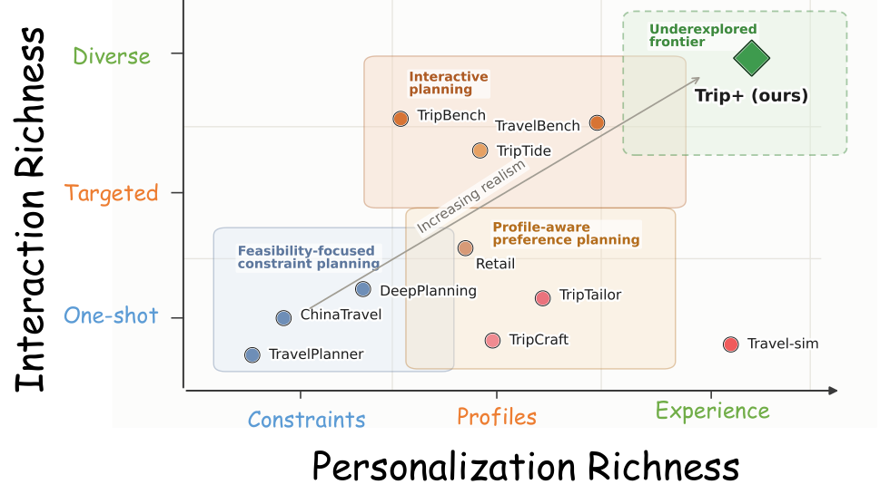
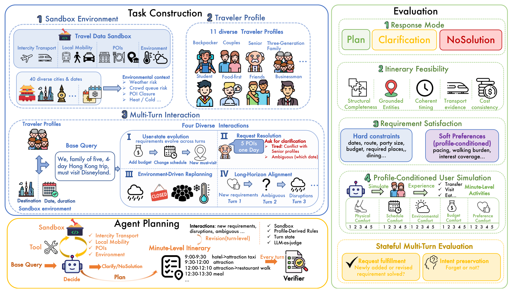
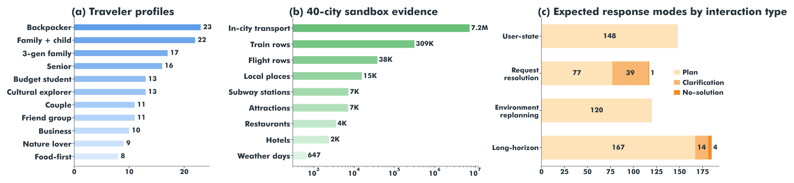
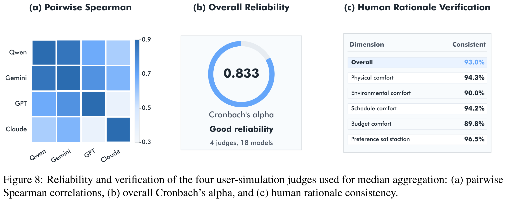
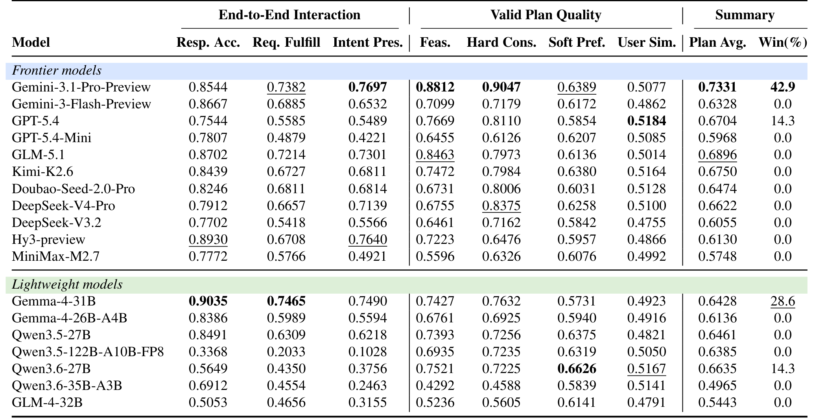
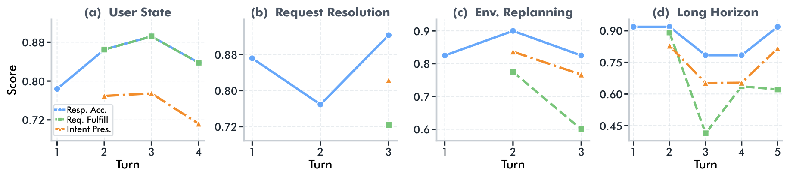
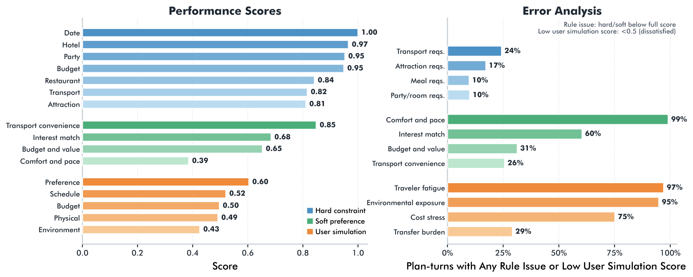
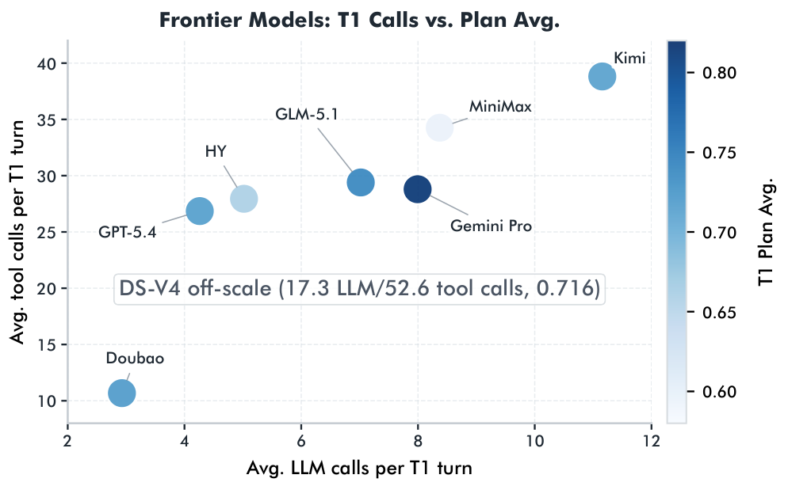
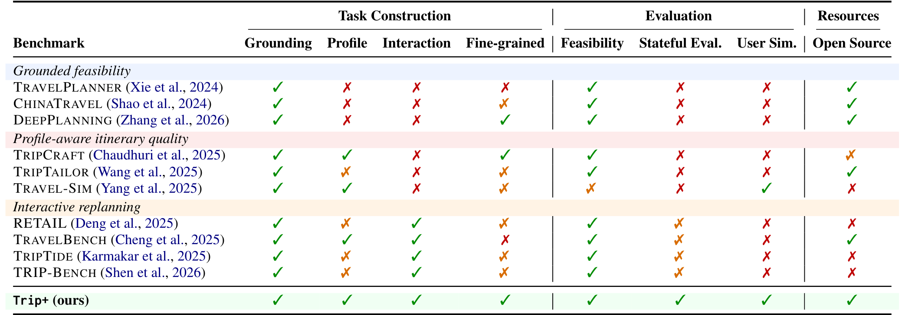

Interactive travel planning is a popular use case for language models: agents must manage evolving preferences and unexpected disruptions over many turns, making complex, profile-conditioned decisions. Existing benchmarks tend to evaluate feasibility, personalization, or interaction in relatively isolated settings. We introduce Trip+ to measure whether agents can plan travel holistically. Given traveler profiles and dynamic interactions, agents must generate and revise minute-level itineraries. End-to-end traveler experience is evaluated through an LLM-based simulator, enabling subjective metrics such as fatigue. Scenarios range from simple request resolutions to complex environment-driven replanning. Evaluating 18 language models, we find a consistent gap in experiential quality: models favor technically feasible but exhausting itineraries that diverge sharply from profiled traveler preferences.

As language agents move toward real-world products, travel planning has emerged as a representative task that goes well beyond one-shot execution. Itinerary design unfolds through multi-turn interaction: travelers refine preferences, introduce constraints, resolve conflicts, and react to changing conditions. This makes travel planning an ideal testbed for personalized agents — requiring itineraries that are simultaneously executable, profile-aligned, and consistent with accumulated user intent.
The underexplored frontier is the joint handling of rich personalization and diverse long-horizon interaction. Profile-aware benchmarks typically evaluate static preference matching and neglect stateful, cross-turn evaluation; interactive replanning benchmarks often focus on isolated patterns (asking a clarifying question, incorporating one piece of feedback, or a single replan). Trip+ unifies them by treating the active user state, profile-derived suitability rules, expected response mode, and the activity-level experience trace as jointly constructed oracle fields.

The fixed sandbox additionally contains 309K train rows, 38K flight rows, and thousands of attractions, restaurants, hotels, subway stations, and weather-day records — a reproducible evidence snapshot shared by both agents and evaluators.

Trip+ is constructed in three stages, using a state-first pipeline: each turn first gets a structured hidden state (state delta, expected response mode, evaluation target) and is only then rendered into a natural-language user utterance.
A normalized evidence snapshot over 40 diverse Chinese cities covering different destination types, seasons, and local conditions. It provides reproducible evidence for POIs, hotels, restaurants, weather, local mobility, and intercity transport, exposed through 11 OpenAI-compatible tools (train/flight query, hotel, attractions, restaurants, location search, road route, city transport plan, city weather). Evaluators verify grounding against the same fixed snapshot.
Each profile template varies long-term user context — party composition, budget sensitivity, mobility constraints, pace, interests, accommodation style, and transport preferences. An observable profile is given to the agent as long-term user memory; the same cues activate hidden profile-derived rule IDs used only for soft-preference scoring. Profiles include Backpacker, Honeymoon Couple, Three-Generation Family, Family with Child, Slow-Paced Senior, Cultural Explorer, Budget Student, Business Traveler, Food-First, Nature Lover, and Friend Group.
User needs change across turns — party composition, budget, schedule, added must-visit attractions, dietary restrictions. (4 turns)
The agent must clarify or resolve under-specified, conflicting, or infeasible requests, choosing the correct response mode. (3 turns)
External disruptions — weather risk, crowding, traffic peaks, closures, availability changes — require itinerary revisions while preserving prior constraints. (3 turns)
Multiple updates are handled in sequence while preserving all earlier commitments — the hardest scenario as constraints accumulate. (5 turns)
At each turn the agent must strategically navigate its action space:
Return a complete minute-level itinerary: transport, lodging, meals, local movement, timing, and costs — for complete requests, normal updates, and tool-verifiable revisions.
Used only for unresolved blocking ambiguity: a missing edit target, a hard-constraint conflict, or a conflict with hard profile facts.
Returned only when tool evidence proves hard constraints are unsatisfiable and the user explicitly asks for an impossibility judgment.
Every turn is evaluated against its hidden state — the expected response mode, active hard requirements, profile-derived expectations, environment conditions, and items to preserve across turns. Evaluation proceeds in two stages: first the response-mode gate, then, for eligible plan turns, the remaining itinerary-level layers.
A stateful multi-turn layer judges each response against accumulated state: request fulfillment (are new turn changes incorporated?) and intent preservation (do ongoing constraints, preferences, and environment conditions remain satisfied?). Reliability is supported by four profile-conditioned judges (Qwen, Claude, Gemini, GPT families, median-aggregated) and human verification over 50 sampled cases spanning 1,825 activities.

We evaluate 18 agentic models under the same lightweight OpenAI-compatible function-calling scaffold. Plan Avg. averages the four valid-plan quality metrics; Win(%) is the share of non-aggregate metrics on which a model ranks first. Bold = best, underline = second-best in each column.

Two headline findings: (1) current LLM agents remain unreliable in realistic multi-turn planning — they still err in deciding whether to plan, clarify, or report infeasibility, and often fail to preserve earlier user needs. (2) feasible itineraries are not necessarily user-aligned: even the strongest model scores only ~0.64 on soft preferences, and the best user-simulation score (GPT-5.4) is just 0.518. Satisfying explicit constraints is insufficient for matching implicit, evolving preferences.
We focus on Gemini-3.1-Pro-Preview, the strongest overall model, to diagnose two remaining gaps: unreliable interaction and unsuitable plans.



Existing travel-planning benchmarks fall short of comprehensive evaluation. Profile-aware benchmarks evaluate static preference matching; interactive replanning benchmarks focus on isolated patterns. Trip+ is the only benchmark supporting grounding, profiles, interaction, fine-grained itineraries, feasibility, stateful evaluation, user simulation, and open sourcing together.

Trip+ evaluates travel-planning agents on generating feasible, traveler-suitable, and intent-consistent itineraries under dynamic user needs and environments. Our evaluation reveals a clear gap: while current models satisfy basic feasibility and explicit constraints, they struggle with stateful revisions, user alignment, and effective evidence use. We hope Trip+ drives the development of agents that plan adaptive, profile-aligned experiences — rather than merely executable trips.
@inproceedings{tripplus2026,
title = {Trip+: Benchmarking Agents in Personalized
Interactive Travel Planning},
author = {Anonymous ACL submission},
booktitle = {Under review at ACL},
year = {2026},
note = {Code and data: https://anonymous.4open.science/r/trip-plus-BE40}
}
This is an anonymous submission. Author and venue metadata will be updated upon de-anonymization. Code and data will be fully open-sourced regardless of acceptance.